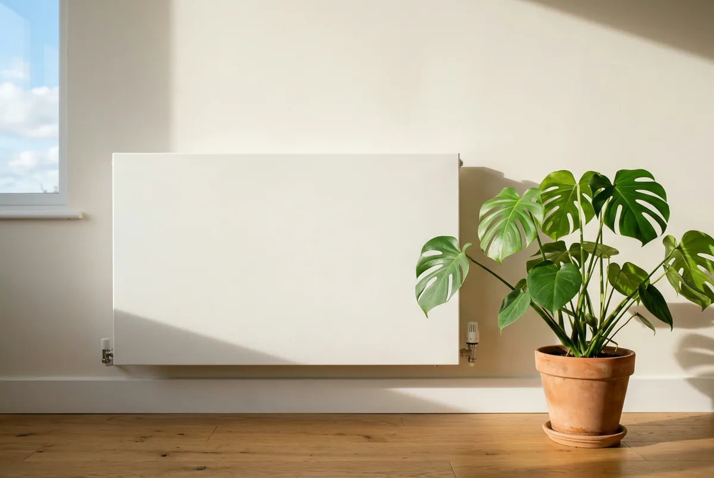
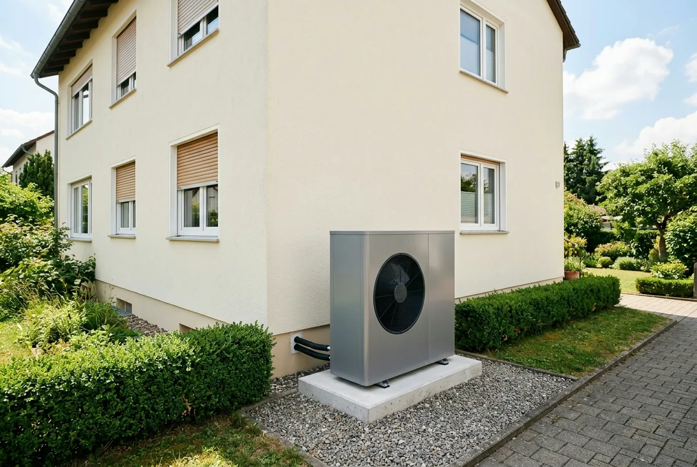
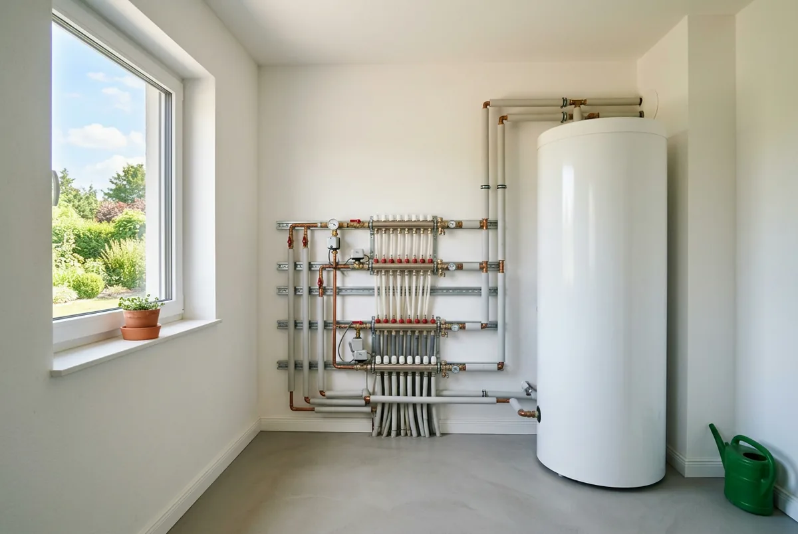

Inhaltsverzeichnis
- Kurzantwort: Ja — mit einer Bedingung
- Woher der Mythos kommt
- Vorlauftemperatur und Jahresarbeitszahl
- Die Feldmessungen im Bestand
- Der Selbsttest an kalten Tagen
- Mischsysteme richtig behandeln
- Zu kleine Heizkörper: die Optionen
- Die ehrlichen Grenzen
- Typische Irrtümer
- Fazit und nächste Schritte
- Kurz und direkt beantwortet
- Häufige Fragen
Das Wichtigste in Kürze
- Nicht der Heizkörper zählt: Entscheidend ist die Vorlauftemperatur — und die ergibt sich aus dem Verhältnis von Heizlast zu Heizfläche, nicht aus der Bauart der Heizfläche.
- Fraunhofer ISE, Messung im Bestand (3. November 2025, 77 Anlagen): Jahresarbeitszahl im Mittel 3,4 bei Luft/Wasser und 4,3 bei Erdreich.
- Heizkörper sind der Normalfall: Rund ein Viertel der vermessenen Gebäude hatte nur Heizkörper, die Hälfte ein Mischsystem.
- Baujahr sagt nichts aus: Über Baujahre von 1826 bis 2001 fand die Studie keinen Zusammenhang zwischen Alter und Effizienz der Anlage.
- Unter 55 Grad: Verbraucherzentrale und Bundesverband Wärmepumpe nennen diese Vorlauftemperatur als Eignungsgrenze; die Verbraucherzentrale Baden-Württemberg nennt in ihrer Pressemeldung vom 22. September 2023 für den Altbau eine Zielarbeitszahl von mindestens 3.
- Selbst prüfbar: Heizkurve an einem kalten Tag absenken und beobachten, welcher Raum zuerst nicht mehr warm wird — kostenlos und umkehrbar.
Funktioniert eine Wärmepumpe im Altbau ohne Fußbodenheizung?
Ja. Eine Wärmepumpe arbeitet auch dann wirtschaftlich, wenn im ganzen Haus nur Heizkörper hängen. Die Fußbodenheizung ist kein Muss, sondern der bequemste Weg zu einer sehr großen Heizfläche.
Entscheidend ist die Vorlauftemperatur — die Temperatur des Wassers, das zu den Heizflächen fließt. Sie ergibt sich aus dem Verhältnis von Heizlast (wie viel Wärme ein Raum am kältesten Tag verliert) zu Heizfläche. Viel Fläche bei gleicher Heizlast heißt: lauwarmes Wasser genügt. Wenig Fläche: das Wasser muss heiß sein.
Und die Vorlauftemperatur bestimmt die Jahresarbeitszahl (JAZ), das Verhältnis von abgegebener Wärme zu eingesetztem Strom über ein Jahr. Der Heizkörpertyp taucht in dieser Kette nicht als eigene Größe auf — er ist nur eine von mehreren Möglichkeiten, Fläche bereitzustellen.
Die richtige Frage lautet deshalb nicht „habe ich eine Fußbodenheizung?“, sondern: Mit welcher Vorlauftemperatur wird mein Haus am kältesten Tag warm? Das können Sie weitgehend selbst herausfinden.
Der Denkfehler: Warum sich der Mythos so hartnäckig hält
Der Irrtum entsteht aus einer richtigen Beobachtung und einem falschen Schluss. Richtig ist: Fußbodenheizungen kommen mit deutlich niedrigeren Vorlauftemperaturen aus, je nach Auslegung im Bereich von etwa 35 Grad. Falsch ist der Schluss, das läge an der Bauart — es liegt an der Fläche.
Ein Heizkörper gibt Wärme über die Temperaturdifferenz zwischen Heizfläche und Raumluft ab. Je größer die Fläche, desto kleiner darf diese Differenz bei gleicher Leistung sein. Eine Fußbodenheizung nutzt den kompletten Boden eines Raums — deshalb genügen ihr wenige Grad Übertemperatur. Darin liegt ihr Vorteil, in nichts anderem.
Ein Heizkörper hat weniger Fläche. Aber „weniger“ ist keine feste Größe: Zwischen einer schmalen, einlagigen Platte und einem tiefen, dreilagigen Heizkörper mit Konvektorblechen in derselben Fensternische liegt ein deutlicher Unterschied in der wärmeabgebenden Fläche — bei gleichem Platzbedarf.
Dazu kommt der zweite Hebel: die Heizlast. Alte Heizkörper wurden für weit höhere Vorlauftemperaturen — je nach Anlage 70 Grad und mehr — und für den damaligen Dämmzustand ausgelegt. Wurden seither Fenster getauscht oder das Dach gedämmt, ist die Heizlast gesunken — die Heizkörper sind dieselben geblieben. Die Verbraucherzentrale Baden-Württemberg nennt Altbau-Heizkörper in ihrer Pressemeldung vom 22. September 2023 „überraschend oft überdimensioniert“. Diese Reserve braucht eine Wärmepumpe.

Warum die Vorlauftemperatur über die Effizienz entscheidet
Die Vorlauftemperatur entscheidet über die Effizienz, weil eine Wärmepumpe keine Wärme erzeugt, sondern vorhandene Wärme aus Außenluft, Erdreich oder Grundwasser auf ein höheres Niveau hebt. Der Strom bezahlt diesen Hub. Je kleiner der Abstand zwischen Quellentemperatur und geforderter Vorlauftemperatur, desto weniger Strom kostet er.
Der Bundesverband Wärmepumpe fasst die Wirkrichtung in seinem Praxisratgeber „Modernisieren mit Wärmepumpe“ so zusammen: Je geringer die benötigte Vorlauftemperatur, desto größer die Arbeitszahl. Wie viel ein einzelnes Grad bringt, hängt von Gerät, Quelle und Betriebspunkt ab; die kursierenden Prozentwerte widersprechen einander und lassen sich auf keine belastbare Primärquelle zurückführen. Wir nennen deshalb bewusst keine feste Zahl. Als Planungsgrenze nennt der Verband maximal 55 Grad. Die Verbraucherzentrale nennt als Eignungskriterium eine möglichst ganzjährig unter 55 Grad liegende Vorlauftemperatur (Stand 25. März 2026). Die Verbraucherzentrale Baden-Württemberg nennt in ihrer Pressemeldung vom 22. September 2023 zusätzlich 35 bis 55 Grad als optimalen Bereich für Heizflächen und mindestens die Jahresarbeitszahl 3 im Altbau.
Die Bandgrenzen der Tabelle sind unsere Orientierung, kein Normwert — maßgeblich ist der Raum, der als letzter warm wird.
| Vorlauftemperatur am kältesten Tag | Einordnung | Typische Ausgangslage |
|---|---|---|
| bis 35 Grad | Bestwert, günstigster Betriebsbereich | Flächenheizung oder sehr große Heizkörper im gedämmten Haus |
| 35 bis 45 Grad | Sehr gut; in diesem Bereich lagen die mittleren Höchst-Vorlauftemperaturen der älteren Fraunhofer-Feldstudie „WPsmart im Bestand“ (Sekundärzitat, Größenordnung) | Ausreichend dimensionierte Heizkörper, häufig Mischsysteme |
| 45 bis 55 Grad | Funktioniert, die Arbeitszahl sinkt spürbar; 55 Grad gilt als Obergrenze | Bestandsheizkörper im teilsanierten Altbau |
| dauerhaft über 55 Grad | Ungünstig, erst die Ursachen klären | Einzelne zu kleine Heizkörper, hohe Heizlast, fehlender hydraulischer Abgleich |
Zwei Einschränkungen: Die Werte gelten für den Auslegungstag, den statistisch kältesten Tag Ihrer Region; an den meisten Heiztagen senkt die Heizkurve die Temperatur deutlich darunter. Und die Warmwasserbereitung braucht höhere Temperaturen — ein eigener Betriebsfall, der nicht mit dem Heizungsvorlauf verwechselt werden darf.
Was die Fraunhofer-Messungen im Gebäudebestand zeigen
Die Fraunhofer-Messungen im Gebäudebestand zeigen, dass Wärmepumpen dort auch mit Bestandsheizkörpern wirtschaftliche Arbeitszahlen erreichen — es sind die belastbarsten Daten, weil sie an real betriebenen Anlagen erhoben wurden. Das Fraunhofer-Institut für Solare Energiesysteme (ISE) veröffentlichte am 3. November 2025 Ergebnisse aus dem Gebäudebestand: 77 Wärmepumpen — 61 Luft/Wasser- und 16 Erdreich-Geräte — in Gebäuden der Baujahre 1826 bis 2001 mit 90 bis 370 Quadratmetern Wohnfläche.
- Luft/Wasser: Jahresarbeitszahl im Mittel 3,4, Spanne 2,6 bis 4,9.
- Erdreich: Jahresarbeitszahl im Mittel 4,3, Spanne 3,6 bis 5,4.
Entscheidend ist die Wärmeübergabe: Etwa ein Viertel der Gebäude hatte ausschließlich Heizkörper, ein weiteres Viertel ausschließlich Flächenheizung, rund die Hälfte ein Mischsystem. Die Frage „Fußbodenheizung ja oder nein“ geht damit an der Realität der meisten Häuser vorbei. Der Schlussbericht hält zudem fest, dass ausreichend dimensionierte Heizkörper im Mittel mit ähnlich niedrigen Temperaturen betrieben werden können wie Flächenheizungen.
Die wichtigste Einzelaussage ist aber eine andere: Zwischen dem Baujahr des Gebäudes und der Effizienz der Wärmepumpe ließ sich kein Zusammenhang feststellen. In einer Stichprobe von 1826 bis 2001 hat das Gewicht. Das Alter eines Hauses sagt nichts darüber, ob eine Wärmepumpe darin gut läuft. Es zählt der Zustand: Heizlast, Heizflächen, Hydraulik, Einstellung. Dazu passt ein Nebenergebnis: Der elektrische Heizstab trug bei den Luft/Wasser-Anlagen nur 1,3 Prozent zur elektrischen Arbeit bei.
Eine ältere Fraunhofer-Feldstudie („WPsmart im Bestand“, 56 Gebäude, abgeschlossen 2020) erhob die gefahrenen Temperaturen: maximale Vorlauftemperatur zur Raumheizung im Mittel knapp 44 Grad bei den Luft/Wasser-Anlagen. Diese Zahl liegt uns nur über Sekundärquellen vor — wir nennen sie als Größenordnung, nicht als exakten Messwert.
Selbsttest: So schätzen Sie Ihre Vorlauftemperatur selbst ein
Ihre Vorlauftemperatur schätzen Sie selbst ein, indem Sie an einem kalten Tag den Ist-Wert am Regler des Kessels ablesen — dort stehen die Vorlauf-Solltemperatur und die Heizkurve, meist als „Steilheit“ und „Niveau“. Ohne Display messen Sie am Vorlaufrohr hinter dem Kessel, mit einem Anlegethermometer oder einem Infrarot-Thermometer auf mattem Klebeband, weil blankes Metall die Messung verfälscht. Notieren Sie den Wert immer zusammen mit der Außentemperatur, sonst lässt er sich nicht einordnen.
Wie weit Ihr Haus tatsächlich heruntergehen kann, zeigt erst der Absenkversuch: alle Thermostatventile öffnen, die Heizkurve in kleinen Schritten absenken und notieren, welcher Raum zuerst nicht mehr warm wird. Das Vorgehen Schritt für Schritt und die Auswertung Raum für Raum beschreiben wir in Heizkörper tauschen oder behalten.
Was der Test leistet und was nicht: Er zeigt, ob Sie bei rund 40, 50 oder deutlich über 55 Grad liegen — das reicht für die Vorentscheidung. Eine Heizlastberechnung ersetzt er nicht: Lagen Ihre kältesten Testtage bei plus fünf Grad, ist der Auslegungsfall bei minus zehn Grad noch offen. Und ein Vorlauf, der nur wegen eines fehlenden hydraulischen Abgleichs hoch ist, täuscht einen schlechteren Zustand vor, als er ist.
Die weiteren Prüfpunkte für das ganze Gebäude führt unser Selbstcheck zur Wärmepumpen-Eignung im Altbau in abarbeitbarer Reihenfolge auf.
Sie kennen Ihre Vorlauftemperatur — wir rechnen die Heizlast dazu
Wir ermitteln die Heizlast raumweise, gleichen sie mit Ihren Heizkörpern ab und sagen Ihnen, welche Räume wirklich eine Maßnahme brauchen — und prüfen ein Angebot vor der Unterschrift auf Förderfähigkeit.
Kostenlose Erstberatung sichernMischsysteme: Heizkörper und Fußbodenheizung im selben Haus
Der häufigste reale Fall wird in Ratgebern fast nie behandelt: Bad und Wohnzimmer mit Fußbodenheizung, der Rest mit Heizkörpern. Nach den Fraunhofer-Messungen liegt rund die Hälfte der Bestandsgebäude in dieser Konstellation.
Es gibt dann eine Wärmepumpe, aber zwei sehr unterschiedliche Temperaturbedarfe. Ohne weitere Maßnahme läuft die Anlage auf dem höchsten gemeinsamen Nenner — auf der Temperatur des anspruchsvollsten Heizkörpers. Die Flächenheizung bekommt zu heißes Wasser und regelt es über ihre Ventile weg.
- Der begrenzende Raum entscheidet, nicht der Durchschnitt. Ein Haus, in dem 80 Prozent der Fläche mit 40 Grad auskommen und ein Zimmer 60 Grad braucht, ist ein 60-Grad-Haus — bis dieses Zimmer gelöst ist. Darin liegt der größte Hebel.
- Getrennte Kreise mit Mischer lösen das Effizienzproblem nicht. Der Mischer drosselt die Temperatur für den Fußbodenkreis; die Wärmepumpe muss den hohen Vorlauf für die Heizkörper trotzdem erzeugen. Ein Mischer schützt Estrich und Komfort, nicht die Arbeitszahl.
- Der hydraulische Abgleich ist hier besonders wichtig, weil Flächenheizung und Heizkörper sehr verschiedene Durchflüsse haben. Ohne ihn versorgt sich der Kreis mit dem geringsten Widerstand zuerst.

Wenn einzelne Heizkörper zu klein sind — was dann sinnvoll ist
Sind einzelne Heizkörper für ihren Raum zu klein, lautet die falsche Antwort: alle Heizkörper tauschen. Die richtige ist eine raumweise Heizlastberechnung. Dabei wird je Raum ermittelt, wie viel Wärme er am Auslegungstag verliert — abhängig von Außenwandfläche, Fenstern, Dämmzustand, Raumhöhe und Nachbarräumen — und dieser Wert der Leistung des vorhandenen Heizkörpers bei der Zieltemperatur gegenübergestellt. Erst dann steht fest, welcher Heizkörper wirklich zu klein ist.
Faustformeln nach Quadratmetern führen hier in die Irre: Zwei gleich große Zimmer unterscheiden sich deutlich, wenn eines eine Außenecke mit zwei Fenstern hat und das andere innen liegt. Auch wie viel zusätzliche Fläche eine bestimmte Temperaturabsenkung erfordert, lässt sich nicht pauschal beziffern. Verlassen Sie sich auf die Rechnung für Ihr Haus, nicht auf eine Regel aus dem Internet.
Vor jeder Tauschentscheidung steht der hydraulische Abgleich: Er stellt ein, wie viel Heizwasser durch jeden Heizkörper fließt. Nach dem Praxisratgeber des Bundesverbands Wärmepumpe sind rund 80 Prozent der Heizungsanlagen in Wohngebäuden nicht abgeglichen — ein unterversorgter Heizkörper wirkt dann zu klein, ohne es zu sein. Der Abgleich verteilt vorhandene Leistung, er erzeugt keine.
Die Wege aus dem Engpass sind überschaubar: Heizkurve absenken und Thermostatventile öffnen, hydraulisch abgleichen, einzelne Heizkörper gegen eine tiefere Bauart tauschen, in Räumen ohne freie Wandfläche einen Gebläsekonvektor setzen, in einzelnen Räumen eine Flächenheizung nachrüsten — oder die Heizlast senken, statt Fläche zu vergrößern. Welche Option in welcher Lage passt, mit Aufwand und Wirkung nebeneinandergestellt, zeigt die Übersicht in Heizkörper tauschen oder behalten.
Ob größere Heizkörper oder eine bessere Gebäudehülle günstiger sind, hängt vom Gebäude ab; die Reihenfolge behandeln wir in Erst dämmen oder erst Wärmepumpe. Zur Förderung nur so viel: Seit der BEG-Reform vom 21. Juli 2026 besteht der Heizungszuschuss aus 30 Prozent Grundförderung, 16 Prozent Klimageschwindigkeitsbonus und 10 bis 40 Prozent Einkommensbonus; maximal sind 70 Prozent möglich, 80 Prozent für Selbstnutzer mit zu versteuerndem Haushaltsjahreseinkommen bis 30.000 Euro. Was davon bleibt, rechnen wir im Rechenbeispiel zur Wärmepumpen-Förderung 2026 durch.

Wann es tatsächlich schwierig wird
Es gibt Fälle, in denen der Weg über Bestandsheizkörper nicht aufgeht:
- Sehr hohe Heizlast bei ungedämmter Hülle. Ungedämmte Wände, alte Fenster und ein ungedämmtes Dach verlangen auch großzügigen Heizkörpern hohe Temperaturen ab. Zur Debatte steht dann die Reihenfolge, nicht die Wärmepumpe an sich.
- Durchgängig sehr kleine Heizkörper. Hängen im ganzen Haus schmale, einlagige Platten und bleibt der Selbsttest schon bei mäßiger Kälte über 55 Grad, ist das kein Fall für zwei getauschte Heizkörper, sondern eine größere Maßnahme.
- Räume mit großer Höhe oder viel Glasfläche. Über drei Meter Raumhöhe oder raumhohe Fenster erzeugen eine Heizlast, die zur Grundfläche nicht passt — oft sind das die begrenzenden Räume.
- Kein Platz für zusätzliche Heizfläche. Wenn Nischen, Möblierung oder Denkmalschutz keinen größeren Heizkörper zulassen und kein Bodenaufbau möglich ist, bleiben teurere Lösungen.
Die Antwort lautet dann selten „geht nicht“, aber häufig „nicht in dieser Reihenfolge und zu diesem Preis“. Ob eine Wärmepumpe für Ihr Gebäude passt, führen wir in Wärmepumpe im Altbau: wann sie sich lohnt und wann nicht zusammen; welche Gerätemerkmale bei höheren Vorlauftemperaturen zählen, in den Kriterien für den Modellvergleich.
Vier Irrtümer, die teuer werden können
- „Ohne Fußbodenheizung geht keine Wärmepumpe.“ Widerlegt: In etwa einem Viertel der von Fraunhofer ISE vermessenen Gebäude lief die Wärmeübergabe nur über Heizkörper, in rund der Hälfte über Mischsysteme.
- „Dann müssen eben alle Heizkörper raus.“ Meist unnötig und fast immer die teuerste Variante. Zielführend ist der gezielte Tausch der wenigen Heizkörper im begrenzenden Raum.
- „Mein Haus ist von 1930, das wird nichts.“ Die Messungen fanden über Baujahre von 1826 bis 2001 keinen Zusammenhang zwischen Baujahr und Effizienz. Das Baujahr ersetzt keine Prüfung — in keine Richtung.
- „Jedes Grad weniger Vorlauftemperatur spart X Prozent Strom.“ Die kursierenden Werte widersprechen einander und sind auf keine belastbare Primärquelle zurückzuführen. Die Richtung stimmt, die Zahl nicht.
Fazit: Ihr Fahrplan zur ersten Einschätzung
Die Fußbodenheizung ist kein Zugangsticket für die Wärmepumpe, sondern eine bequeme Abkürzung zu viel Heizfläche — und viel Heizfläche ist nur ein Weg zu niedriger Vorlauftemperatur. Wer die Vorlauftemperatur im Griff hat, hat die Jahresarbeitszahl im Griff.
- Am nächsten kalten Tag Vorlauftemperatur und Heizkurve ablesen und notieren.
- Thermostatventile öffnen, Heizkurve absenken, die Grenze finden und die Räume notieren, die zuerst abfallen.
- Liegt die Grenze unter etwa 55 Grad, ist die Ausgangslage gut — dann geht es um Feinarbeit: Abgleich, Heizkurve, Dimensionierung.
- Liegt sie darüber, klären, ob einzelne Räume, die Verteilung oder die Gebäudehülle die Ursache sind — das führt zu sehr unterschiedlichen Maßnahmen und Kosten.
- Vor der Investitionsentscheidung eine raumweise Heizlastberechnung erstellen lassen — sie verhindert zugleich eine zu groß dimensionierte Wärmepumpe.
Genau hier setzen wir an: Wir rechnen die Heizlast raumweise, ordnen Ihre gemessenen Temperaturen ein und prüfen ein Handwerkerangebot vor der Unterschrift auf Förderfähigkeit.
Stand der Angaben (26. Juli 2026)
Stand: 26. Juli 2026, ohne Gewähr. Die genannten Fördersätze folgen der Richtlinie BEG EM vom 17. Juli 2026 (in Kraft seit 21. Juli 2026) und dem KfW-Merkblatt 458; sie sind keine Förderzusage im Einzelfall.
Kurz und direkt beantwortet
Die folgenden Fragen beantworten wir bewusst in wenigen Sätzen — jede Antwort steht für sich und ist ohne den übrigen Text verständlich.
Wie viele Altbauten mit Wärmepumpe haben überhaupt eine Fußbodenheizung?
Nur etwa ein Viertel: In der Feldmessung des Fraunhofer ISE vom 3. November 2025 an 77 Wärmepumpen im Gebäudebestand arbeitete rund ein Viertel der Gebäude ausschließlich mit Flächenheizung, ein weiteres Viertel ausschließlich mit Heizkörpern und etwa die Hälfte mit einem Mischsystem aus beidem. Die Vorstellung, eine Wärmepumpe setze eine Fußbodenheizung voraus, deckt sich also nicht mit der gemessenen Praxis. Entscheidend ist nach dem Schlussbericht die ausreichende Dimensionierung der Heizfläche.
Was bedeutet Vorlauftemperatur bei einer Heizung?
Die Vorlauftemperatur ist die Temperatur des Heizwassers, das vom Wärmeerzeuger zu den Heizflächen fließt — für den Wärmepumpenbetrieb nennt der Bundesverband Wärmepumpe in seinem Praxisratgeber „Modernisieren mit Wärmepumpe“ maximal 55 Grad als Planungsgrenze. Sie ergibt sich aus dem Verhältnis von Heizlast zu Heizfläche: viel Fläche bei gleicher Heizlast bedeutet eine niedrige Temperatur, wenig Fläche eine hohe. Die Verbraucherzentrale Baden-Württemberg nennt in ihrer Pressemeldung vom 22. September 2023 35 bis 55 Grad als optimalen Bereich für Heizflächen.
Spielt das Baujahr meines Hauses eine Rolle dafür, ob eine Wärmepumpe funktioniert?
Nein: In der Feldmessung des Fraunhofer ISE vom 3. November 2025 ließ sich zwischen dem Baujahr des Gebäudes und der Effizienz der Wärmepumpe kein Zusammenhang feststellen — und das über eine Stichprobe von Gebäuden der Baujahre 1826 bis 2001. Entscheidend ist der Zustand: Heizlast, Heizflächen, Hydraulik und Einstellung der Anlage. Das Baujahr ersetzt keine Prüfung, weder als Ausschlussgrund noch als Freibrief.
Was ist ein Mischsystem aus Fußbodenheizung und Heizkörpern?
Ein Mischsystem ist ein Gebäude, in dem Flächenheizung und Heizkörper am selben Wärmeerzeuger hängen — nach der Feldmessung des Fraunhofer ISE vom 3. November 2025 der häufigste Fall, rund die Hälfte der 77 untersuchten Gebäude. Für die Wärmepumpe zählt dabei der anspruchsvollste Raum: Sie muss die Temperatur liefern, die der knappste Heizkörper braucht, auch wenn die Flächenheizung mit weniger auskäme. Ein Mischer schützt den Estrich, senkt aber nicht die erzeugte Temperatur.
Wie viel Strom verbraucht der Heizstab einer Wärmepumpe im Altbau?
Wenig: Nach der Feldmessung des Fraunhofer ISE vom 3. November 2025 trug der elektrische Heizstab bei den Luft/Wasser-Wärmepumpen nur 1,3 Prozent zur eingesetzten elektrischen Arbeit bei, bei den Erdreich-Anlagen nahezu nichts. Die verbreitete Sorge, im Altbau heize am Ende der Heizstab, bestätigt sich in diesen Messungen nicht. Ein dauerhaft hoher Heizstabanteil ist ein Hinweis auf falsche Auslegung oder Einstellung, kein Systemmerkmal.
Stimmt es, dass jedes Grad weniger Vorlauftemperatur einen festen Prozentsatz Strom spart?
Nein, eine feste Zahl dafür ist nicht belegbar. Die kursierenden Prozentwerte je Grad widersprechen einander und lassen sich auf keine belastbare Primärquelle zurückführen — deshalb nennen wir bewusst keinen Wert. Belegt ist nur die Wirkrichtung: Der Bundesverband Wärmepumpe formuliert in seinem Praxisratgeber „Modernisieren mit Wärmepumpe“, je geringer die benötigte Vorlauftemperatur, desto größer die Arbeitszahl. Wie stark der Effekt ausfällt, hängt von Gerät, Wärmequelle und Betriebspunkt ab.
Häufige Fragen
Funktioniert eine Wärmepumpe wirklich ohne Fußbodenheizung?
Ja. Die Fußbodenheizung ist kein technisches Erfordernis, sondern eine besonders große Heizfläche, die deshalb mit niedrigen Temperaturen auskommt. Geben Ihre Heizkörper dieselbe Wärmemenge bei ähnlich niedriger Temperatur ab, arbeitet die Wärmepumpe genauso effizient. Die Feldmessungen des Fraunhofer ISE vom November 2025 belegen das: Von 77 vermessenen Anlagen im Bestand arbeitete rund ein Viertel nur mit Heizkörpern, etwa die Hälfte mit einem Mischsystem. Der Schlussbericht hält fest, dass ausreichend dimensionierte Heizkörper ähnlich niedrige Temperaturen erlauben wie Flächenheizungen. Entscheidend ist die Dimensionierung, nicht die Bauart.
Welche Vorlauftemperatur ist für eine Wärmepumpe im Altbau noch wirtschaftlich?
Als Planungsgrenze nennt der Bundesverband Wärmepumpe maximal 55 Grad. Die Verbraucherzentrale nennt als Eignungskriterium eine möglichst ganzjährig unter 55 Grad liegende Vorlauftemperatur (Stand 25. März 2026); die Verbraucherzentrale Baden-Württemberg nennt in ihrer Pressemeldung vom 22. September 2023 für Heizflächen einen optimalen Bereich von 35 bis 55 Grad. Je niedriger die Temperatur, desto besser die Jahresarbeitszahl — diese Wirkrichtung ist eindeutig, eine feste Prozentangabe je Grad ist es nicht. Wichtig ist der Bezugspunkt: Gemeint ist der Heizbetrieb am kältesten Tag des Jahres. An den meisten Heiztagen liegt die Temperatur darunter, und die Warmwasserbereitung ist ein eigener Betriebsfall.
Was bedeutet eine Jahresarbeitszahl von 3 in der Praxis?
Eine Jahresarbeitszahl von 3 bedeutet, dass die Anlage über ein ganzes Jahr aus einer Kilowattstunde Strom drei Kilowattstunden Wärme gewinnt. Die Kennzahl ist ein Jahresmittel und schließt alles ein, was zum Betrieb gehört: kalte wie milde Tage, die Warmwasserbereitung, Hilfsaggregate und einen eventuell zugeschalteten Heizstab. Sie beschreibt damit die konkrete Anlage in Ihrem Haus, nicht das Gerät auf dem Prüfstand. Die Verbraucherzentrale Baden-Württemberg nennt in ihrer Pressemeldung vom 22. September 2023 mindestens 3 als Zielwert für den Altbau. Welcher Wert erreicht wird, entscheiden Heizflächen, Vorlauftemperatur, hydraulische Einstellung und Dimensionierung — nicht das Baujahr des Hauses.
Wie finde ich die Vorlauftemperatur meiner bestehenden Heizung heraus?
Am einfachsten am Regler des Kessels: Dort sind die Vorlauf-Solltemperatur und die Heizkurve hinterlegt, meist über die Parameter Steilheit und Niveau. Notieren Sie den Wert immer zusammen mit der Außentemperatur, sonst lässt er sich nicht einordnen. Ohne Display messen Sie am Vorlaufrohr hinter dem Kessel mit einem Anlegethermometer oder einem Infrarot-Thermometer auf mattem Klebeband, weil blankes Metall die Messung verfälscht. Aussagekräftig wird das Ergebnis erst an kalten Tagen, weil die Heizkurve bei milder Witterung ohnehin absenkt.
Welche Jahresarbeitszahl ist im Altbau mit Heizkörpern realistisch?
Die Feldmessungen des Fraunhofer ISE vom 3. November 2025 an 77 Wärmepumpen in Gebäuden der Baujahre 1826 bis 2001 ergaben im Mittel eine Jahresarbeitszahl von 3,4 bei Luft/Wasser-Geräten (Spanne 2,6 bis 4,9) und von 4,3 bei Erdreich-Geräten (Spanne 3,6 bis 5,4). Die Verbraucherzentrale Baden-Württemberg nennt in ihrer Pressemeldung vom 22. September 2023 für den Altbau mindestens 3 als Zielwert. Die große Spanne zeigt: Es entscheidet die Ausführung — Heizflächen, hydraulischer Abgleich, Dimensionierung und Einstellung — nicht das Baujahr, für das die Studie keinen Zusammenhang mit der Effizienz fand.